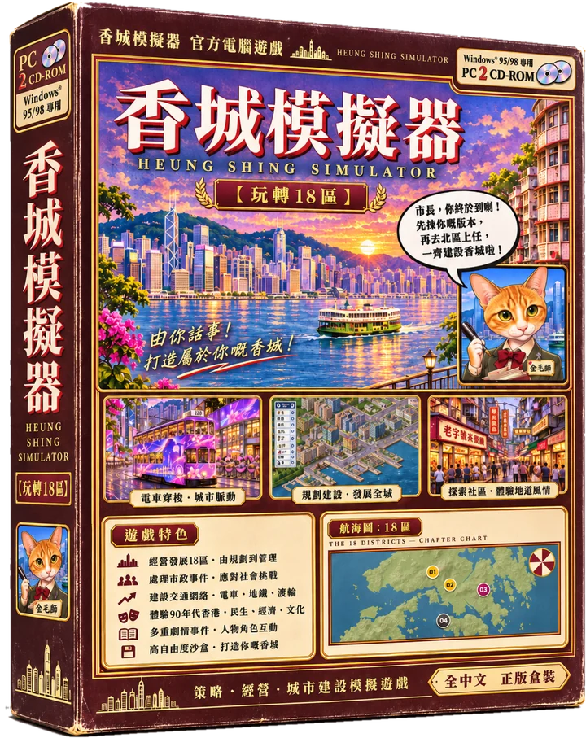
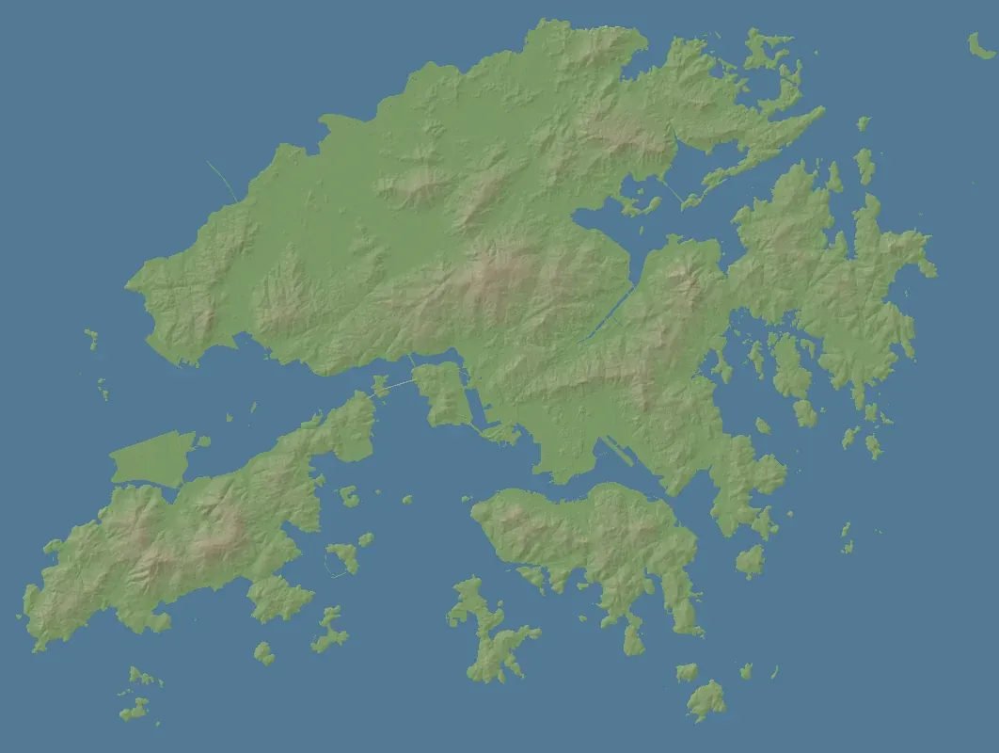

網頁版即玩
唔使安裝，開瀏覽器就玩；手機會自動用觸控版。
即刻玩v6.2.0 — 【青馬飛架】
由你話事！打造屬於你嘅香城。
向 SimCity 2000 致敬嘅香港城市建設遊戲：起街道、劃分區、經營巴士公司、應付議會同颱風，再玩轉香港 18 區。
瀏覽器 · Windows · macOS · Android


女皇一封密令，你由北區上任。香港 18 區每區一章，喺真實地區地圖上建城，三粒星過關。

六位香城市長任你揀，亦可以用遊戲入面 30 幾位角色做你嘅樣。
金毛玲：撳地圖上嘅點或者下面嘅區名睇章節。
聖誕大廈燈飾、端午龍舟競渡、七月十四阿飄、UFO 到訪，仲有維港煙花壓軸。香城生活，多姿多彩。
遊戲配樂 · 廣東話字幕 · 90 秒 · 1080p
睇晒 31 張截圖同影片 →遊戲本體免費下載。揀返你部電腦嘅版本，就可以開始建立自己嘅香城。
揀好機種，準備登機！
唔使安裝，開瀏覽器就玩；手機會自動用觸控版。
即刻玩適合 M1、M2、M3、M4 或更新的 Mac。下載 DMG 後拖入「應用程式」即可安裝。
下載 ARM64 DMG適合 Intel CPU 的 Mac。下載 DMG 後拖入「應用程式」即可安裝。
下載 Intel DMG推薦大部分玩家使用。安裝後會加入一般應用程式捷徑。
下載安裝版 EXE不用安裝，下載後直接執行。適合快速試玩。
下載免安裝版 EXEAndroid 7 或以上，需要 Chrome。全螢幕玩網頁版，存檔同 Chrome 共用，每次更新自動用最新版本。下載 APK 後安裝，手機可能要你允許安裝「未知來源」app。
下載 Android APK遊戲以 Electron 桌面程式運行，用 WebGL 硬體加速渲染。城市越大、夜晚越多燈，對顯示卡嘅要求越高。
| 項目 | 最低配置 | 建議配置 |
|---|
AI 新聞屬選用功能。安裝後請在「設定 → AI 新聞」貼上你自己嘅 Ollama API key；遊戲及安裝檔不包含任何開發者密鑰。
遊戲入面嘅城市新聞同街坊留言，喺官網都睇得到。
廈村祥叔 香城連儂牆有意見、有 bug、有心聲？貼張 memo 上牆。
為食 Viviane 香城街坊福利會登記做街坊會員（自選），之後有更多互動。
李超人 宣傳2-零速傳播申請一句 120 字內嘅廣告，批准後喺遊戲走馬燈播。
分享時請註明 《香城模擬器 / Heung Shing Simulator》 分享官方連結、截圖同介紹時，請保留作品名稱及原始連結。 版權與使用條款